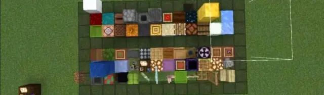
注：这个原作者是曲奇，只不过是因为曲奇自己建政(bush)…被抽象审核拿下死掉了之后专栏也是跟着死掉，然后我们帮忙再发出来，问题不大
本文理论源于本人1.18-1.20测试和主观经验向分析所得，并无源码支撑理论，有误还请谅解.
1.恼鬼的刷新范围
测试于1.18.10至1.20.51.01，唤魔者会在其脚部下为中心的一个3*y*3的柱体里选取点位生成恼鬼（1-3只/此次）并且会根据目标的y来延伸这个“范围”
菌光体表示两者站位 ，延伸的距离如下.
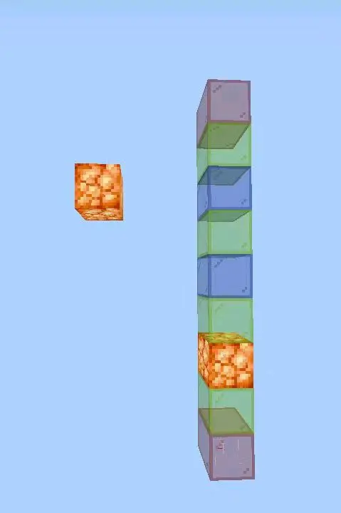
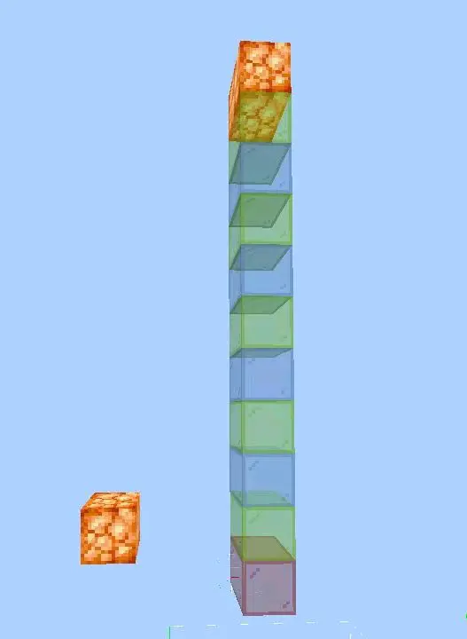
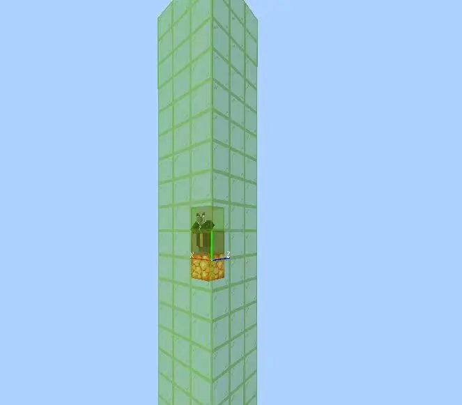
而在仇恨目標近似水平情况下 会呈现出几个“高频点位”，在其乘坐矿车时生成在一些点位“固定”住，可使其取得刷新的最大面积，对于这些点位，可以依靠点位结构的测试和图像（np啦）得出一个更好的架构.（大雾）
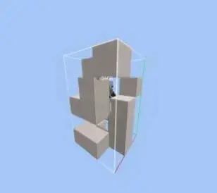
在目标上下1-6范围内时的
总点位：注意方向
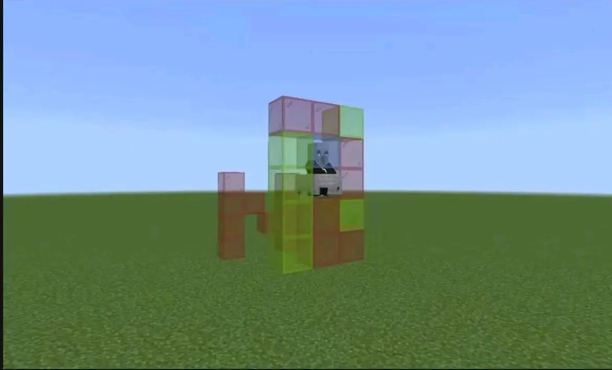
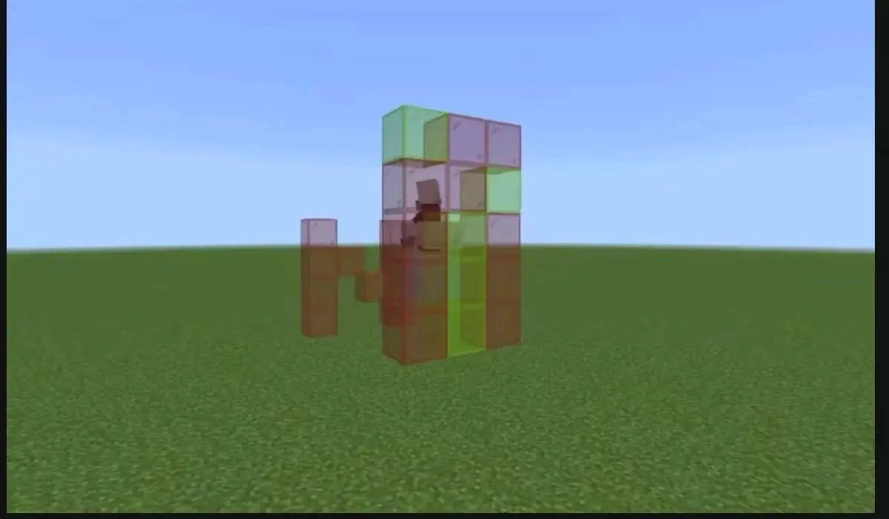
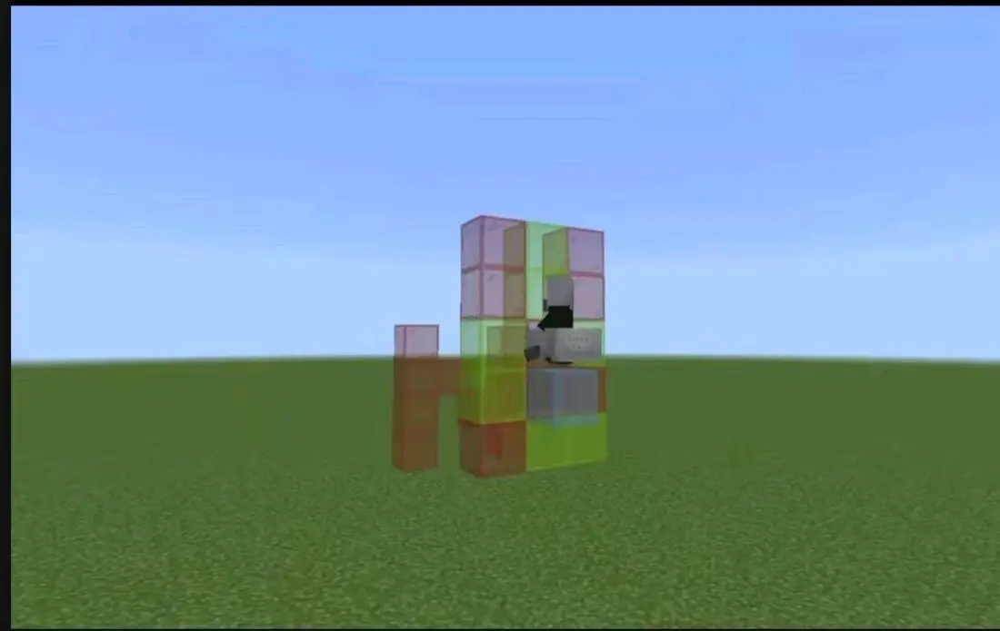
2.尖牙生成
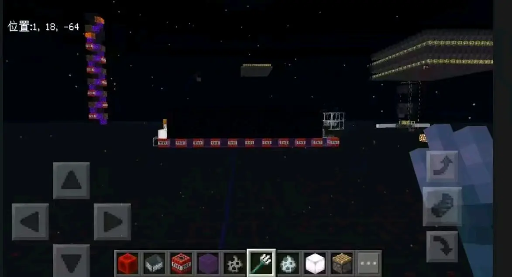
水平最远距离约20（19），偏向于西北角，可憑空（跨過無方塊的座標再下一個可生成的方塊處生成）.和平模式下仍可生成，会与压力板等元件交互，只不过只有实体没有伤害。 值得一提的是，尖牙会在击中一些实体（目前已知：僵尸猪灵）时向上延伸“尖牙”的伤害—煉獄人機你同樣可以用這個機制擴大處死的範圍和分離.
3.关于方块的类型
红色代表“不可刷方块” 绿色代表“可刷方块”具体这些方块是什么.
通过对上述点位的限制生成和方块轮替，我们可以得到下两图
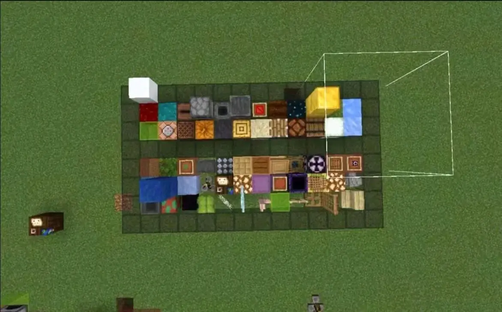
青金石代表水，上部分刷.下部分不刷
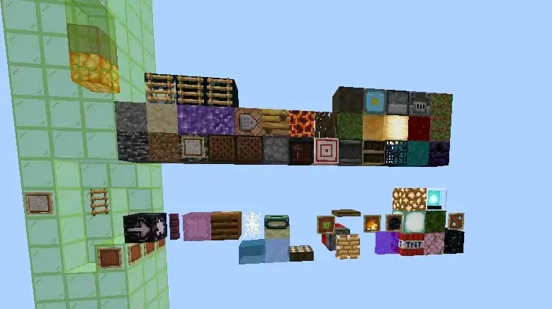
下方不刷上方刷.
囤积了一些方块经过反复测试后，我得出了一个结论，BE，恼鬼/尖牙的可生成方块是和梯子可附着方块的方块表完全一致的.
1.拼图 结构方块因为无法附着梯子 无法生成尖牙/惱鬼.
2半砖（台阶）在单层状态时 无论上下都是属于不可生成恼鬼/尖牙的，而2个整方块大小的台阶可放置梯子，其就可刷新.
3.尖牙蔓延會取決於上面的類型 尖牙生成依賴于下方可放置梯子方块，上一个如果非可生成部分方块可以向上向前选点（可以空）继续延伸 如链 玻璃等顶层则会挤压其使其停留下一层.
可刷eg
基岩 ， 隐形基岩 ， 屏障 ， 可疑的沙子 / 沙粒 ， 标靶 ， 泥土 ， 紫水晶块 ， 蛙光灯 ， 岩浆块 ， 刷怪笼 ， 混凝土 ， 陶瓦 ， 粘土 ， 黑曜石 ， 菌光体 ， 下界疣方块 ， 下界反应堆 ， 更新数据方块 1 ， 更新数据方块 2 ， 音符盒 ， 唱片机 ， 书架 ， 南瓜方块 ， 西瓜方块 ， 发射器 ， 投掷器 ， 岩浆块 ， 蜂巢 ， 蜂箱 ， 蜂蜜块 ， 粘液块 ， 诡异菌块 ， 高炉 ， 烟熏炉 ， 各类岩石 ， 熔炉 ， 工作台 ， 锻造台 ， 制图台 ， 造箭台 ， 自动合成台 ， 矿石块 ， 矿石原矿 ， 红石灯 ， 铜灯 ， 珊瑚 ， 活塞 ， 蘑菇块 ， 骨块 ， 海晶石等 … … ..
不可刷
tnt ， 海晶灯 ， 信标 ， 结果空位新旧都是 ， 陶罐 ， 酿造台 ， 讲台 ， 水 ， 岩浆 ， 树叶 / 杜鹃花叶 ， 玻璃 ， 荧石 ， 边界 ， 下界传送门 ， 末地传送门 ， 折越门 ， 结构方块 ， 地图方块 ， 滴水石柱 ， 光源方块 0-15 ， 红石中继器 ， 红石比较器 ， 末地传送门框潜影盒 ， 栅栏 ， 玻璃板 ， 墙类 ， 头颅类 ， 仙人掌 ， 活塞臂 ， 阳光传感器 ， 火 ， 空气 ， 活板门 ， 单层台阶无论上下 ， 漏斗 ， 藤蔓 ， 作物 ， 水晶芽 ， 移动的方块 ， 炼药锅 ， 花盆 ， 画 ， 梯子梯子本身 ， 红石粉等 … …
过程：注：图中上部分绿色玻璃的分区为“可刷方块”，下部分为“不可刷方块”.金块表示化学版的分解台 工作台 等交互性方块，下方青金石块表示如果你足够熟悉普通实体的生成机制的话，相信你会马上看出来，图中的可生成方块并不是普通生物的可生成方块，
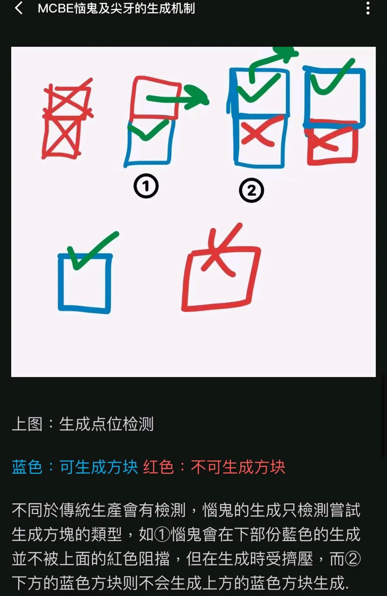
藍色：可生成方塊（見上）
紅色：不可生成方塊（見上）
不同於傳統生產會有檢測，惱鬼的生成只檢測嘗試生成方塊的類型，如①惱鬼會在下部份藍色的生成 並不被上面的紅色阻擋，但在生成時受擠壓，而②下方的蓝色方块则不会生成 上方的蓝色方块生成.
4.如何實用化——推荐水平仇恨.
①雙緯度，處死記得使用三叉戟，正常情況下惱鬼會潛下虛空.
如果不用非法门片 使用完整门的话 需要注意结构边缘的完整性.
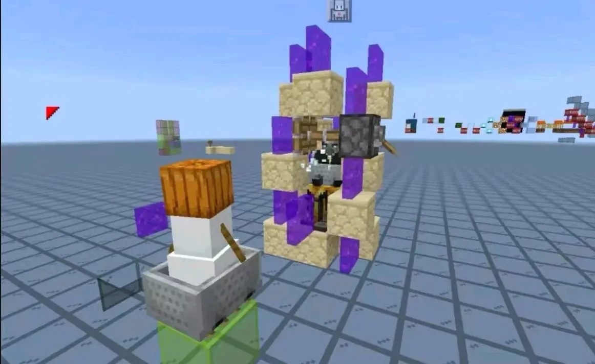
②.單緯度
如果纯粹想要经验的话，推荐末地单点位三叉戟即可
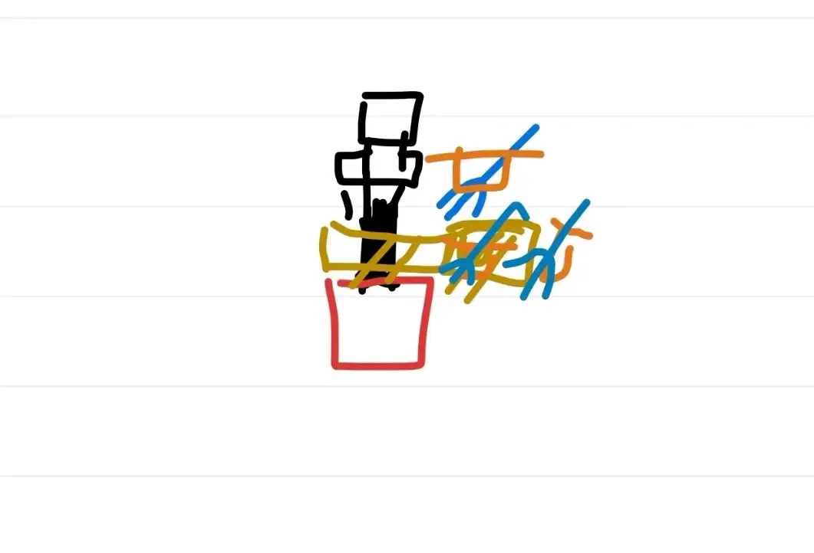
end：
相关传送门：BV1ij411q7Pj——离殇的代发